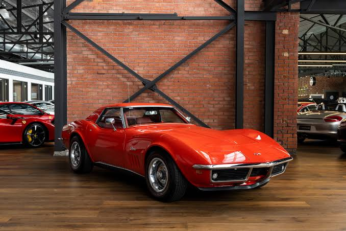
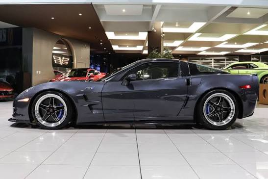
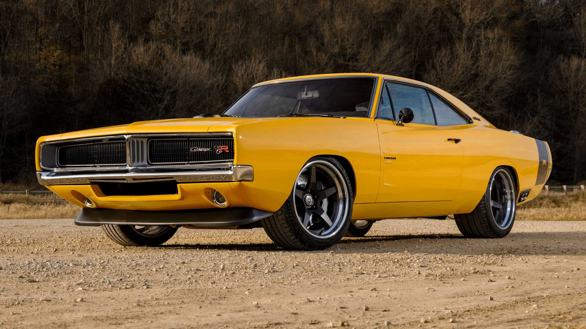
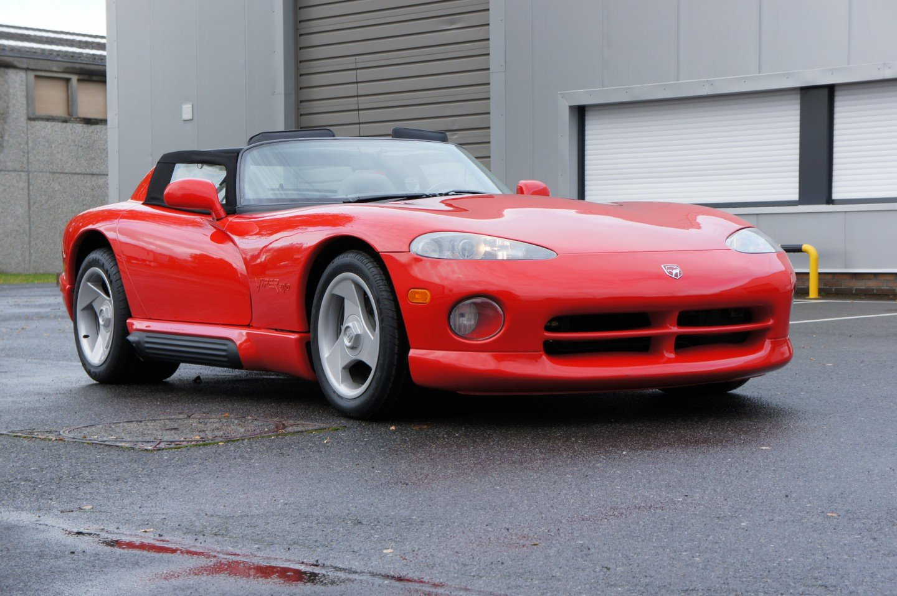
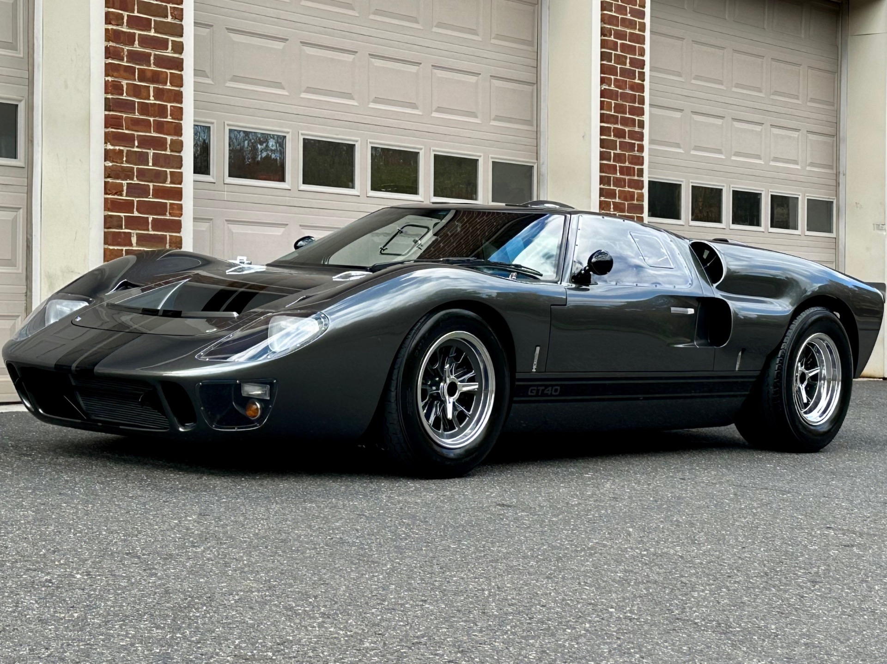
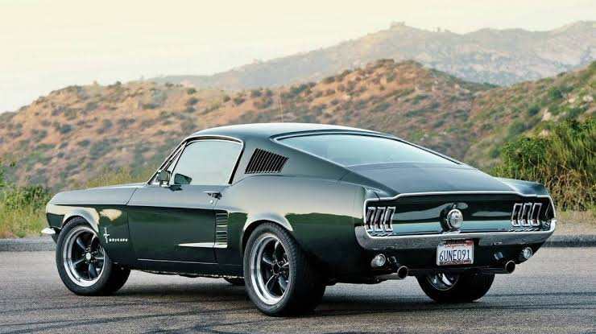
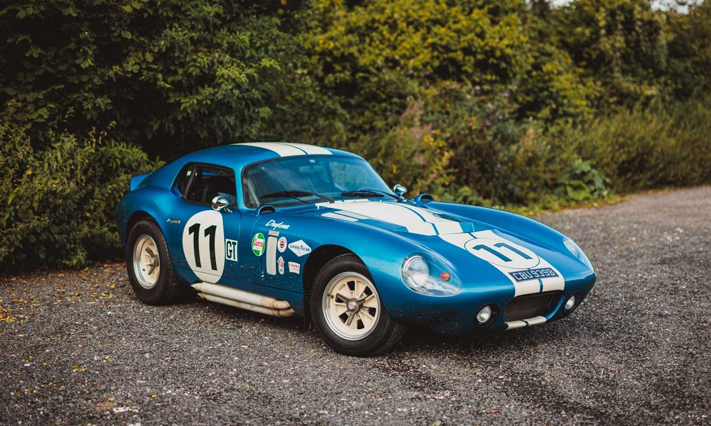
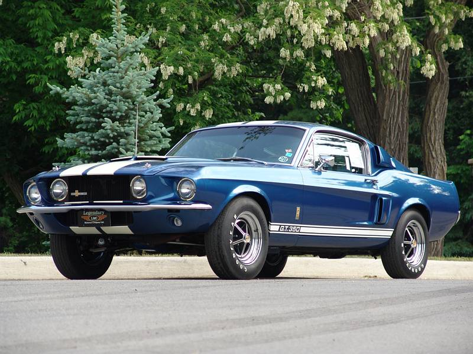

Chevrolet
Camaro SS '69
O Chevrolet Camaro surgiu em 1966 como uma resposta ultra-agressiva da General Motors ao sucesso avassalador do Ford Mustang. A versão Super Sport (SS) de 1969 tornou-se o pináculo da primeira geração do modelo, apresentando uma frente agressiva redesenhada com grelhas desportivas e opções de motores V8 gigantescos. O carro foi projetado para dominar os semáforos urbanos e as pistas de aceleração americanas, definindo o visual musculado da era dourada dos Muscle Cars antes da crise do petróleo.
Especificações Técnicas:
• Motor: 6.5L (396 cu in) Big-Block V8
• Potência: 375 cv
• Peso: 1535 kg
• Relação Potência/Peso: 0.24 cv/kg (4.09 kg/cv)
• Velocidade Máxima: 210 km/h
• 0-100 km/h: 6.8 segundos

Corvette C3
Lançado em 1968, o Corvette C3 inspirou-se diretamente no protótipo "Mako Shark II" desenhado por Larry Shinoda. Esta geração marcou a história pelas suas linhas esculturais inspiradas num tubarão, para-lamas imponentes e os inovadores painéis de tejadilho amovíveis (T-Top). O C3 atravessou uma época de transição tecnológica e estética massiva na indústria automóvel americana, mantendo-se como o desportivo de eleição da cultura pop ocidental ao longo de mais de uma década.
Especificações Técnicas:
• Motor: 5.7L (350 cu in) Small-Block V8
• Potência: 300 cv
• Peso: 1510 kg
• Relação Potência/Peso: 0.19 cv/kg (5.03 kg/cv)
• Velocidade Máxima: 205 km/h
• 0-100 km/h: 7.2 segundos

Corvette C6
A geração C6 do Corvette foi introduzida em 2005 com uma missão crucial: modernizar o ícone americano e colocá-lo a competir diretamente contra os refinados exóticos europeus em termos de dinâmica de condução. Foi o primeiro Corvette desde 1962 a perder os faróis escamoteáveis devido às normas de aerodinâmica. Com suspensão geométrica evoluída e o robusto motor LS2 (posteriormente LS3), o C6 provou ser uma máquina formidável tanto na estrada como nas pistas de resistência como Le Mans na sua classe.
Especificações Técnicas:
• Motor: 6.2L LS3 V8
• Potência: 436 cv
• Peso: 1461 kg
• Relação Potência/Peso: 0.29 cv/kg (3.35 kg/cv)
• Velocidade Máxima: 306 km/h
• 0-100 km/h: 4.3 segundos

Dodge
Charger '69
O Dodge Charger de 1969 representa o auge estético da cultura de pura força americana. Nascido da necessidade de criar uma linha mais aerodinâmica e intimidadora com a famosa grelha frontal bipartida oculta "hideaway headlights", este modelo dominou os campeonatos da NASCAR e tornou-se um ícone global imortal da televisão e do cinema. É considerado por muitos entusiastas como o design mais belo e agressivo de toda a era dos Muscle Cars.
Especificações Técnicas:
• Motor: 7.0L 426 Hemi V8
• Potência: 425 cv
• Peso: 1760 kg
• Relação Potência/Peso: 0.24 cv/kg (4.14 kg/cv)
• Velocidade Máxima: 220 km/h
• 0-100 km/h: 5.6 segundos

Viper
O Dodge Viper surgiu no início dos anos 90 com um propósito assustadoramente simples: recriar o espírito purista, radical e sem filtros do clássico Shelby Cobra para a era moderna. Desenvolvido sem qualquer tipo de assistência eletrónica à condução (sem controlo de tração, sem ABS ou estabilidade), o Viper ganhou uma reputação feroz devido ao seu temperamento imprevisível induzido pelo gigantesco bloco V10 desenvolvido originalmente em parceria com a Lamborghini.
Especificações Técnicas:
• Motor: 8.0L V10 Atmosférico
• Potência: 400 cv
• Peso: 1490 kg
• Relação Potência/Peso: 0.26 cv/kg (3.72 kg/cv)
• Velocidade Máxima: 266 km/h
• 0-100 km/h: 4.5 segundos

Ford
GT40
O Ford GT40 nasceu da fúria e de uma rivalidade histórica. Após Enzo Ferrari quebrar um acordo de venda da sua marca a Henry Ford II à última hora, o magnata americano ordenou a criação de um bólide de corrida capaz de destruir a supremacia da Scuderia Ferrari nas 24 Horas de Le Mans. O carro, batizado com base na sua altura de escassas 40 polegadas, venceu a prova consecutivamente de 1966 a 1969, redefinindo o design aerodinâmico mundial.
Especificações Técnicas:
• Motor: 7.0L V8 Big-Block (Mk II)
• Potência: 485 cv
• Peso: 1210 kg
• Relação Potência/Peso: 0.40 cv/kg (2.49 kg/cv)
• Velocidade Máxima: 330 km/h
• 0-100 km/h: 4.2 segundos

Mustang Fastback 2+2
O Ford Mustang revolucionou por completo o mercado automóvel global em 1964 ao inaugurar a classe dos Pony Cars (carros compactos desportivos e acessíveis). A versão Fastback de 1965 com configuração 2+2 introduziu uma silhueta contínua no vidro traseiro, conferindo-lhe uma dinâmica visual imbatível. Ficou eternizado na história automóvel através de perseguições de culto no cinema, transformando-se num sinónimo universal de liberdade sobre rodas.
Especificações Técnicas:
• Motor: 4.7L (289 cu in) Windsor V8
• Potência: 271 cv
• Peso: 1300 kg
• Relação Potência/Peso: 0.20 cv/kg (4.79 kg/cv)
• Velocidade Máxima: 195 km/h
• 0-100 km/h: 7.5 segundos

Shelby
Daytona Coupe
O Shelby Daytona Coupe foi concebido pelo designer Peter Brock especificamente para superar a Ferrari 250 GTO na classe GT do campeonato mundial da FIA. Os modelos descapotáveis Cobra sofriam de um arrasto aerodinâmico terrível nas longas retas dos circuitos europeus. O carro resolveu esse problema ao adotar uma carroçaria aerodinâmica fechada com traseira cortada (estilo Kammback), vencendo o prestigiado campeonato em 1965.
Especificações Técnicas:
• Motor: 4.7L V8 Small-Block
• Potência: 390 cv
• Peso: 1043 kg
• Relação Potência/Peso: 0.37 cv/kg (2.67 kg/cv)
• Velocidade Máxima: 307 km/h
• 0-100 km/h: 4.0 segundos

GT350 '69
Em 1969, os caminhos de Carroll Shelby e da Ford começaram a afastar-se, tornando o Shelby GT350 de 1969 num modelo mais luxuoso, requintado e maduro do que as versões radicais de corrida de meados dos anos 60. Com uma frente alongada em fibra de carbono, entradas de ar funcionais agressivas sobre o capot e um interior luxuoso, este modelo marcou o fecho com chave de ouro do envolvimento direto clássico da Shelby nesta era lendária.
Especificações Técnicas:
• Motor: 5.8L (351 cu in) Windsor V8
• Potência: 290 cv
• Peso: 1475 kg
• Relação Potência/Peso: 0.19 cv/kg (5.08 kg/cv)
• Velocidade Máxima: 210 km/h
• 0-100 km/h: 6.9 segundos
